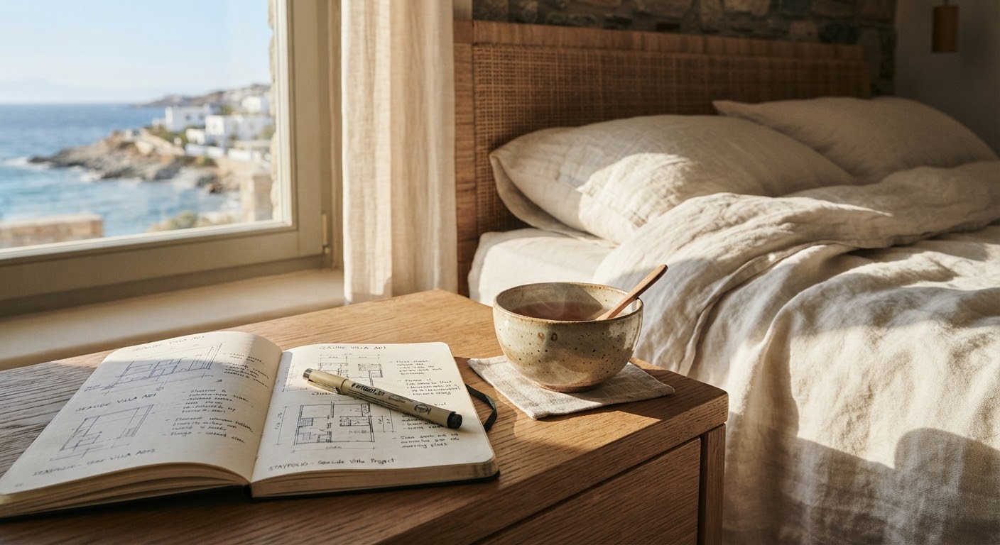
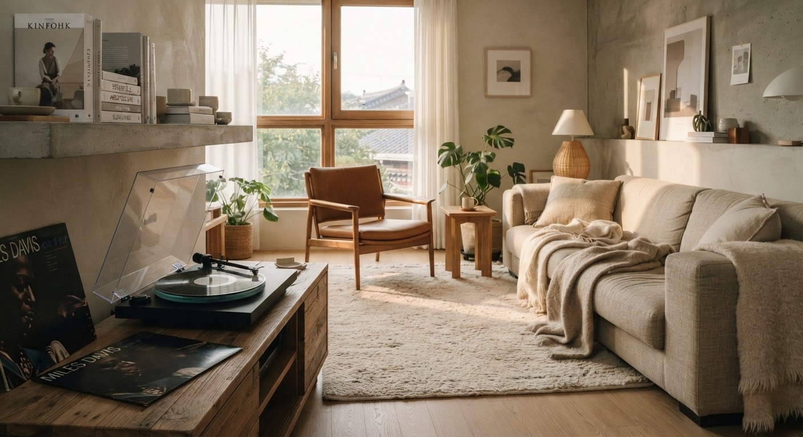

EP. 06RESORT ARCHITECTURE
좋은 쉼은 어떤 공간에서 시작될까
햇빛이 머무는 창가, 손끝에 닿는 나무의 결. 바쁜 일상에서 잠시 벗어나 나의 속도를 되찾게 하는 공간의 이야기를 따라갑니다.
HARUTGYEOL JOURNAL
여행의 기억은 한 장면에서 시작되기도 합니다.
공간과 사람, 쉼에 대한 이야기를 천천히 읽어보세요.

EP. 06RESORT ARCHITECTURE
햇빛이 머무는 창가, 손끝에 닿는 나무의 결. 바쁜 일상에서 잠시 벗어나 나의 속도를 되찾게 하는 공간의 이야기를 따라갑니다.

EP. 05INTERVIEW
조용한 음악과 책 한 권이 있는 오후. 멈춰 서서 바라본 숲의 호흡과, 작은 집이 건네는 다정한 환대에 관하여.
GLOBAL STAY
이국적인 정취와 자연의 아름다움을 온전히 느낄 수 있는 곳. 깊은 숲과 산 사이에서 발견한 머묾의 순간을 소개합니다.